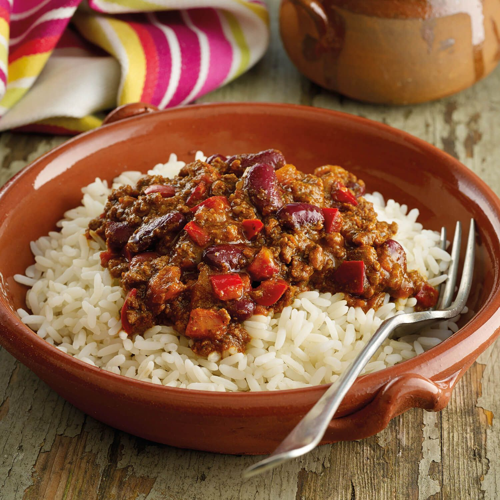

Chilli Con Carne

Description
A hearty, spicy, satisfying classic that always hits the spot
Add more or less chillis depending on how hot you like it
and freeze any leftovers to save on ready meals.
Ingredients
- 500g Minced Beef
- 1 Can Chopped Tomatoes
- 1 Can Kidney Beans
- 2 tbsp Chipotle Paste
- 1 Red Onion
- 150g Basmati Rice
- 1tbsp Crushed Chillis
- 1/2 Beef Stock Pot
- 1 Lime
- 150g Creme Freiche
- 1 large clove of Garlic
Method
- Bring a medium pan of water to the boil. When boiling, add the rice and cook for 12 mins.
When the timer is up, drain any excess water in a sieve and return the rice to the pan with
a tight fitting lid
- Whilst the Rice cooks; halve, peel and chop the onion into small pieces. Drain the Kidney
Beans and mash half of them roughly in a bowl
- Heat a large Frying Pan with a drizzle of Olive Oil on medium-high heat. When hot, add the
minced Beef, season with Salt and Pepper and cook for 3-4 mins until nice and brown
- Add the chopped Onion and cook for another 2 mins until it is soft and golden
- Grate the garlic clove into the pan and cook for 30 secs
- Add the chopped Tomatoes, Chipotle Paste, Beef Stock, crushed Chillis, and the Kidney Beans
(mashed and whole) to the Pan and simmer for 8-10 mins.
- Whilst the Chilli stews, zest your Lime, add the zest to your Creme Freiche
- Once the chilli is nice and thick, fluff up your rice with a fork, share between two bowls,
top with the chilli, and finish off with a dollop of limey creme freiche. Bon Appetit!
Home